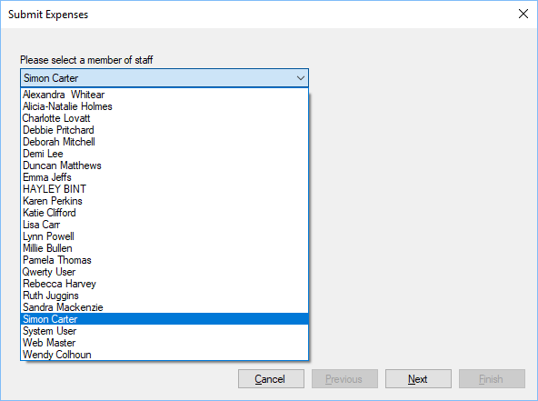

Step 1
Previous
Top
Next
Step 1 will only be available to staff members who can manage expenses, this allows the member of staff to select the staff member who the expenses are for.

Select the user who is submitting expenses and click Next.